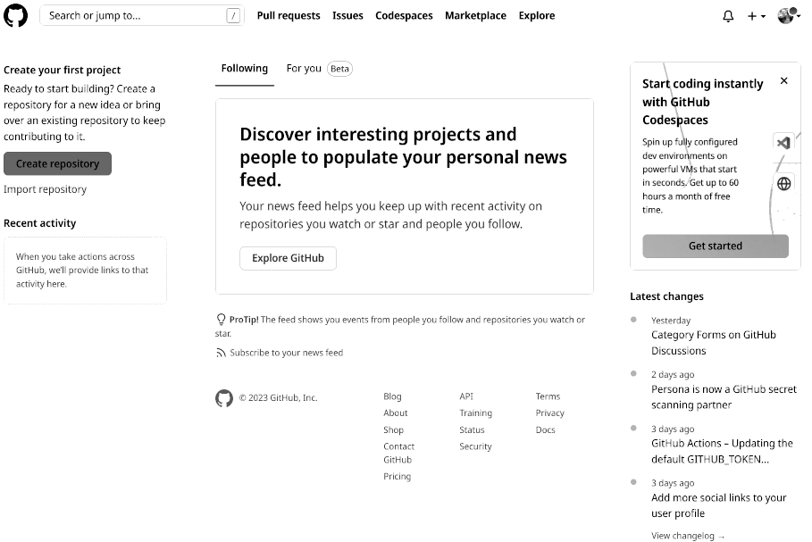

4 Controlo de versões com o Git
O desenvolvimento de software moderno não seria possível sem sistemas de controlo de versões, o mesmo também é verdade para a construção de pipelines de análise robustos e reprodutíveis. Não importa qual é o output do pipeline: um simples gráfico, um reporte de análise estatística, uma publicação científica, um modelo de aprendizagem automática treinado que pretendemos ligar a uma API… se o código do projecto não for versionado, corremos grandes riscos e o pipeline não é reprodutível.
Mas o que é o controlo de versões?
O controlo de versões permite rastrear as alterações feitas aos ficheiros de texto (como os scripts de R). Qualquer alteração feita em qualquer ficheiro do projecto é catalogada, possibilitando raestrear como o ficheiro foi alterado, quem fez as alterações, e quando é que as alterações foram feitas. Com o uso do controlo de versões torna-se mais simples colaborar num projecto e forçar os membros da equipa a lidar explicitamente com potenciais conflitos que possam surgir, quando o mesmo ficheiro é alterado simultaneamente por pessoas diferentes. Se o nosso computar se perder, for roubado, ou explodir, os nossos projectos ficam guardados num sevidor: isto porque as ferramente de controlo de versões usam os servidor que faz o rastreamento das alterações (em alguns casos, este servidor pode ser o computador dum colega).
As ferramentas de controlo de versões também facilitam experimentar com novas ideias. Podemos começar um novo branch que basicamente faz uma cópia do nosso projecto. Neste novo branch, podemos experimentar em segurança novos recursos, e se as experiências não foram conclusivas, podemos simplesmente descartar o branch: a cópia orginal do nosso projecto permanece sem alterar. Também usamos branches para implementar novas funcionalidades, corrigir bugs, e gerir o projecto num paradigma designado como desenvolvimento com base no tronco (trunk-based).
Há várias ferramentas de controlo de versões mas o Git é sem dúvida a mais popular. Já o Github é um serviço de hospedagem de repositórios para os nossos projectos que também providencia outras ferramentas como rastrear issues, wiki de projecto, pedido de funcionalidades… e também a muito importante integração contínua. Embora isto possa parecer muito abstracto no final do próximo capítulo teremos todo o conhecimento necessário para usarmos o Git e o Github nos nossos projectos.
Precisamos de instalar o Git nos nossos computadores. Com o Git instalado, podemos começar logo a usá-lo e embora não precisemos duma conta no Github (ou num serviço semelhante) é recomendável que o façamos para facilitarmos a colaboração com outros. É também possível colaborar com várias pessoas usando o Git sem um serviço como o Github, configurando um repositório num servidor ou numa drive de rede mas isto cai fora do âmbito deste livro.
O Github oferece repositórios privados gratuitos, pelo que se não quisermos que o nosso trabalho seja público também o podemos usar. Só as pessoas que convidarmos para o nosso repositório privado poderão ver o seu conteúdo e colaborar connosco. Gitea, Gitlab, Bitbucket ou Codeberg são serviços semelhantes ao Github. Todos têm as suas vantagens e desvantagens.
As principais vantagens do Github são:
- Tem uma vasta comunidade de utilizadores;
- Os seus serviços de integração contínua são de extrema utilidade, e tem mais de 2000 minutos mensais gratuitos.
As desvantagens são:
- Foi comprado pela Microsoft em 2018;
- Não é possível termos a nossa própria instância do Github (pelo nemos, não de forma gratuita).
O facto de ser rpropriedade da Microsoft pode não parecer um problema, mas o registo prévio de aquisições da Microsoft é discutível, e também a discussão recente sobre o uso do código fonte hospedade no Github para treinar modelos de machine learning (Copilot)1 pode deixar-nos desconfortáveis sobre confiar demasiado no Github.
Embora utilizemos o Github para hospedar o nosso projecto, praticamente tudo o que vamos fazer pode ser transferido para outra plataforma de hospedagem de código como o Gitlab ou o Bitbucket, se assim quisermos. A instalação e configuração do Git é sempre igual independentemente do serviço de hospedagem que escolhermos e todos os comandos que vamos usar para interagir com o nosso repositório também serão os mesmos. Mas as duas vantagens que referimos em cima, de facto dão ao Github um plus: muitos desenvolvedores, investigadores e cientistas de dados têm já uma conta no Github e se um dia precisarmos da colaboração doutras pessoas é bem provável que tambám já tenham uma conta no Github e não noutro serviço de hospedagem.
Mas o que diferencia o Github é o Github Actions, o serviço de integração contínua do Github. O Github Actions é literalmente um computador na cloud que podemos usar para executarmos um conjunto de acções sempre que interagimos com o repositório (ou em momentos definidos por nós). Por exemplo, é possível executar testes automáticos sempre que um colaborador sobe alguma alteração ao projecto. Desta forma, podemos garantir que nenhuma alteração introduz um bug. Tomemos como exemplo este livro, sempre que escrevemos e subimos uma nova secção ou um novo capítulo, o website deste livro é gerado de novo e atualizado automaticamente. Cada conta do Github tem 2000 minutos mensais de computação gratuita, o que é bastante. Na parte 2, utilizaremos o Github Actions para executarmos um RAP na cloud, simplesmente subindo updates para o nosso código no Github.
A este propósito, importa sublinahr que NÃO devemos colocar projectos rastreados pelo Git em serviços de cloud como o Dropbox, o Onedrive ou semelhantes.Deve ficar bem claro que não devemos rastrear projectos simultaneamente com o Git e o Dropbox (ou algo parecido). Isto porque o Dropbox não lida bem com conflitos: se dois colaboradores fazem alrterações ao mesmo ficheiro, o Dropbox faz duas copias desse ficheiro. E neste caso um dos colaboradores tem de lidar manualmente com os conflitos potenciais. O problema é que dentro do projecto rastreado pelo Git, há uma pasta oculta com muitos ficheiros usados para sincronizar o projecto e garantir que tudo corre sem sobressaltos. Se colocarmos um projecto com o Git ativo dentro duma pasta do Dropbox, esses ficheiros serão acessados simultaneamente por várias pessoas e o Dropbox vai começar a fazer copias deles, devido aos conflitos. Isto baralha por completo o projecto e pode levar mesmo à perda de dados. Deixemos que seja apenas o Git a trarar do rastreamento e das colaborações. Pode parecer mais complexo do que Uim serviço do tiPO Dropbox, e é, mas é muito mais potente, e, seja qual for a curva de aprendizagem, mais do que compensa, devido às diversas funcionalidades a que passamos a ter acesso. Ao contrário do Dropbox (ou serviço semelhante), o Git lida com conflitos não por ficheiro mas por linha. Assim se dois colaboradores alteram o mesmo ficheiro mas linhas diferentes não teremos um conflito: o Git trata de juntar as alteraçõe por ele.
Finalmente, há algo importante que devemos compreender, e que às vezes confunde algumas pessoas: se o repositório é publico não quer dizer que qualquer pessoa pode fazer alterações ao código. Apenas significa que qualquer pessoa pode fazer o fork do repositório (basicamente fazer uma cópia do repositório para a sua conta Github) e depois sugerir alterações designadas como pull-requests. O dono do repositório pode depois decidir se aceita ou não essas sugestões.
No resto deste capítulo vamos aprender a instalar o Git na nossa máquina, a abrir uma conta no Github e começar a usá-la. Depois veremos alguns cenários:
- como colaborar em equipa num projecto;
- como contribuir para o projecto de outros.
4.1 Instalar e abrir uma conta no Github
Para instalar o Git num macOS ou num Windows basta seguir as instrições de Git Book2. É tão fácil como instalar outro qualquer programa.
Dependendo do sistema operativo que estamos a usar, pode também ser instalado, com o Git, um interface gráfico com o utilizador, possibilitando o seu uso fora da linha de comandos. Tmabémé possível usar o Git através do RStudio ou de muitos outros editores. Aqui não vamos usar nenhum interface gráfico com o utilizador uma vez que não há um interfce que possamos dmizer que seja universal. O único universal é a linha de comandos. Além disso, se aprendermos a usar o Git através da linha de comandos teremos a vida facilitada quando precisarmos de o usar num servidor.
Usar a linha de comandos não é assim tão dificil como pode parecer.
Se ainda não tivermos uma conta de Github então é uma boa altura para a criarmos. Basta visitarmos a página https://github.com/, seguir as instruções e selecionar o nível gratuito para abrirmos a nossa conta.
Na próxima secção vmos a aprender alguns comandos básicos do Git para versionarmos os dois scripts que já escrevemos.
4.2 Git básico
Vamos usar os dois scripts que escrevemos num capítulo anterior. Podemos começar por criar uma pasta chamada housing e colocar lá os dois scripts que escrevemos anteriormente:
save_data.R: https://is.gd/7PhUjdanalysis.R: https://is.gd/qCJEbi
Vamos abrir a pasta que tem os dois ficheiros através do explorador de ficheiros. No windows, com o botão direiro do rato, em qualquer espaço branco dentro da pasta com os ficheiros, selecionamos a opção “Open Git Bash here”. A outra opção, e que funciona tanto em Linux, como em macOS e Windows, é abrirmos um terminale navegarmos para a nossa pasta usando cd (change directory).
cd /home/user/housing/Vamos garantir que estamos na pasta certa, listando o seu conteúdo:
lsA partir de agora temos de garantir que escrevemos os comandos no terminal, em esp+ecífcio no terminal Git BAsh no Windows. Para destinguirmos este terminal do prompt da linha de comandos do R, o prompt do terminal Git Bash começará por owner@localhost. O owner é o nome do utilizador do gestor do projecto nos nossos exemplos a partir daqui, o owner do computador usado por este gestor de projecto é designado localhost (este prompt pode ser diferente de computador parfa computador, às vezes aparece o caminho completo para a directoria do projecto). Isto é o que acontecequando o owner corre ls no directório raíz do projecto:
owner@localhost ➤ ls
analysis.R save_data.R(também há a opção do comando ls -la que também lista ficheiros ocultos)
Devemos garantir que vemos os ficheiros quando executamos ls. Se não os virmos é porque não estamos na directoria correcta.
Podemos agora começar a rastrear estes ficheiros com o Git. No mesmo terminal onde fizemos ls, vamos executar o seguinte comando git:
owner@localhost ➤ git inithint: Using 'master' as the name for the initial branch.
hint: This default branch name is subject to change.
hint: To configure the initial branch name to use in all of your
hint: new repositories, which will suppress this warning, call:
hint:
hint: git config --global init.defaultBranch <name>
hint:
hint: Names commonly chosen instead of 'master' are 'main',
hint: 'trunk' and 'development'. The just-created branch can be
hint: renamed via this command:
hint:
hint: git branch -m <name>
Initialized empty Git repository in /home/user/housing/.git/vamos gastar algum tempo a ler estes hint. Muitos comandos git dão-nos pistas e é sempre uma boa ideia lê-los. Este hint diz-nos que o nome do branch por defeito é “master” mas que isto é alterável. Um branch é como uma versão do nosso código. O branch “master” terá a versão por defeito do nosso código. Mas podemos criar um branch designado “dev” que terá uma versão do nosso código com funcionalidades ainda em desenvolvimento. Não há nada de especial o branch por defeito chamado “master” e podeia ter sido designado doutra forma qualquer. Por exemplo, se criamos um repositório primeito no Github em vez de o criarmos no nosso computador, o nome por defeito do branch será “main”. Temos de ter atenção a estas coisas pois quando começarmos a interagir com o nosso repositório no Github, temos de garantir que temos no nome certo do branch presente. Além disso, por o branch “master” ser o mais importante, ás vezes é chamado de “trunk”, principalmente por equipas que fazem desenvolvimento base-trunk.
Vamos agora executar o comando git:
owner@localhost ➤ git statusOn branch master
No commits yet
Untracked files:
(use "git add <file>..." to include in what will be committed)
analysis.R
save_data.R
nothing added to commit but untracked files present (use "git add" to track)O Git diz-nos que vê dois ficheiros mas que não estãop a ser rastreados. Logo se os modificarmos o Git não fará registo das alterações. Então é uma boa ideia fazermos o que o Git nos está a dizer para fazermos: vamos adicioná-los para que o Git os possa rastrear:
owner@localhost ➤ git addNothing specified, nothing added.
hint: Maybe you wanted to say 'git add .'?
hint: Turn this message off by running
hint: "git config advice.addEmptyPathspec false"Se fizermos apenas git add não acontece nada. precisamos de especificar que ficheiros queremos adicionar. Podemos nomeá-los um a um, por exemplo git add file1.R file2.tx, mas podemos simplesmente adicionar todos os ficcheiros da pasta simplesmente usando . e ver o que se passa.
owner@localhost ➤ git add .Desta vez não temos nenhuma mensagem, será uma coisa boa? Vamos executar git status e ver o que aconteceu:
owner@localhost ➤ git statusOn branch master
No commits yet
Changes to be committed:
(use "git rm --cached <file>..." to unstage)
new file: analysis.R
new file: save_data.RÓptimo! os nossos ficheiros já estão a ser rastreados e podemos fazer o commit. Ou seja, fazemos commit quando estamos satisfeitos com o nosso trabalho e queremos guardar um instantâneo. Estes instantâneos podem então ser subidos para o Github (com um push). Desta maneira, as alterações ficam dispioníveis para outros colaboradores baixarem (pull). Voltaremos a estes conceitos mais adiante. Devemos também saber que existe um ficheiro especial chamado .gitignore que nos permite listar ficheiros e pastas que queremos que sejam ignmoradas pelo Git. Isto pode ser útil caso estejamos a trabalhar com dados sensíveis que não queremos subir para o github. Para já não usaremos o .gitignore, voltaremos a ela na parte 2 do livro.
Estamos agora prontos para fazer o commit dos nossos ficheiros. Cada commit deve ter uma mensagem de commit e podemos escrever esta mensagem como uma opção do comando git commit:
owner@localhost ➤ git commit -m "Project start"A opção -m serve para especificarmos a mensagem do commit. Voltemos a executar git status:
owner@localhost ➤ git statusOn branch master
nothing to commit, working tree cleanIsto sgnifica quie todas as alterações estão registadas num commit. Ou seja depois de fazermos o push, poderiamos queimar o nosso computador pois todas as alterações já estariam no Github.com. Podemos também optar por não fazer o push ainda e continuarmos a trabalhar e a fazer commit. Por exemplo, poderiamos fazer 5 commit e só depois fazer o push e assim os 5 commit subiriam para o github.com.
Vamos agora alterar um dos ficheiros. Abrimos analysis.R num editore simplesmente alteramos o início do ficheiro adicionando uma linha. Ou seja, de:
library(dplyr)
library(ggplot2)
library(purrr)
library(tidyr)para:
# This script analyses housing data for Luxembourg
library(dplyr)
library(ggplot2)
library(purrr)
library(tidyr)e voltamos a fazer git status:
owner@localhost ➤ git statusOn branch master
Changes not staged for commit:
(use "git add <file>..." to update what will be committed)
(use "git restore <file>..." to discard changes in working directory)
modified: analysis.R
no changes added to commit (use "git add" and/or "git commit -a")Uma vez que o ficheiro está rastreado, o Git pode dizer-nos que alguma coisa foi alterada mas que não está num commit. Ou seja, se o nosso computador entrasse em auto-combustão estas alterações estriam perdidas para sempre. É melhor fazermos o commit e depois o push para o Github, o mas depressa possível.
lembremo-nos que primeniro temos de adicionar as alterações a um commit com git add .:
owner@localhost ➤ git add .e depois podemos fazer o commit das alterações com uma mensagem de commit:
owner@localhost ➤ git commit -m "Added a comment to analysis.R"As mensagens de commit devem ser o mais curtas e explicitas possível. Embora possa não ser fácil, compebnsa ter mensagens curtas e claras. De forma ideal, devemos procurar fazer commits pequenos, se possível um commit para cada alteração. Por exemplo se estivermos a adicionar ou corrigir comentários no nosso script, quan do terminarmos esta tarefa devemos fazer um commit. Depois, talvez fazermos um pouco de limpeza de código. Este é um commit separado. Assim podemos rever ou voltar a alterações anteriores duma forma mais simples. E isto será fundamental quando tivermols uma abordagem trunk-based paar colaboramos com outros colegas num projecto. Geralmente não é boa ideia passarmos o dia a fzer código e no fim do dia fazermos um commit enorme, mas muitas vezes é o que acontece.
Mesmo que as nossas alterações ainda não estejam no Github, já podemos voltar a um commit prévio. Suponhmos que apagamos acidentalmente um ficheiro com:
owner@localhost ➤ rm analysis.Rvamso executar git status e ver as alterações (é a linha que começa por delete):
On branch master
Changes not staged for commit:
(use "git add/rm <file>..." to update what will be committed)
(use "git restore <file>..." to discard changes in working directory)
deleted: analysis.R
no changes added to commit (use "git add" and/or "git commit -a")Pois, ficamos sem analysis.R. E quando apagamos na consola significa que ficamos sem ele para sempre. Bem, tecnicamente não, há sempre maneiras de recuperar ficheiros apagados usando as ferrementas certas, mas como estamos a usar o Git, podemos usá-lo para recuperar o ficheiro. Uma vez que ainda não fizemos o commit podemos apenas dizer ao Git para ignorar as alterações. A maneira mais simples é fazer o stash das alterações e depois fazer o drop do stash:
owner@localhost ➤ git stashSaved working directory and index state WIP on master: \
ab43b4b Added a comment to analysis.RA eliminação foi mandada fora (se a quisermos de volta, podemos tê-la com git stash pop ) e o nosso projecto voltou ao momento do último commit. Vejamos os ficheiros:
owner@localhost ➤ lsanalysis.R save_data.RAí está ele. Podemos agora livrar-nos do stash com git stash drop. Mas e se tivéssemos apagado o ficheiro e feito o commit? Nesse cenário não poderiamos usar o git stash, mas poderiamos reverter o commit. Vamos experimentar, primeiro eliminado o ficheiro:
owner@localhost ➤ rm analysis.Rvejamos o status atual, com git status:
On branch master
Changes not staged for commit:
(use "git add/rm <file>..." to update what will be committed)
(use "git restore <file>..." to discard changes in working directory)
deleted: analysis.R
no changes added to commit (use "git add" and/or "git commit -a")Vamos adicionar as alterações e fazer o commit:
owner@localhost ➤ git add .
owner@localhost ➤ git commit -m "Removed analysis.R"[master 8e51867] Removed analysis.R
1 file changed, 131 deletions(-)
delete mode 100644 analysis.RVoltamos a ver o status:
owner@localhost ➤ git statusOn branch master
nothing to commit, working tree cleanFeito! O git stash não nos pode ajudar. Para recuperarmos o ficheiro precisamos de saber qual é o commit para o qual queremos voltar. Cada commit para além duma mensagem tyem um identificador único qua podemos aceder através de git log:
owner@localhost ➤ git logcommit 8e51867dc5ae89e5f2ab2798be8920e703f73455 (HEAD -> master)
Author: User <owner@mailbox.com>
Date: Sun Feb 5 17:54:30 2023 +0100
Removed analysis.R
commit ab43b4b1069cd987685253632827f19d7a402b27
Author: User <owner@mailbox.com>
Date: Sun Feb 5 17:41:52 2023 +0100
Added a comment to analysis.R
commit df2beecba0101304f1b56e300a3cd713ce7366e5
Author: User <owner@mailbox.com>
Date: Sun Feb 5 17:32:26 2023 +0100
Project startO primeiro, a partir de cima, é o último commit que fizemos. Queremos voltar para o que tem a mensagem “Added a comment to analysis.R”. O identificador único do commit é dado pela sequência longa de caracteres e designa-se por hash. Precisamos de o copiar (bastam os primeiros 10 caracteres). Agora podemos reverter para o commit correcto com o comando:
owner@localhost ➤ git revert ab43b4b1069cd98768..HEADe está feito! Podemos verificar que está tudo certo, executando ls e vendo que temos o ficheiro de novo, fazemos git log para lermos o log do que fizemos:
owner@localhost ➤ git logcommit b7f82ee119df52550e9ca1a8da2d81281e6aac58 (HEAD -> master)
Author: User <owner@mailbox.com>
Date: Sun Feb 5 18:03:37 2023 +0100
Revert "Removed analysis.R"
This reverts commit 8e51867dc5ae89e5f2ab2798be8920e703f73455.
commit 8e51867dc5ae89e5f2ab2798be8920e703f73455 (HEAD -> master)
Author: User <owner@mailbox.com>
Date: Sun Feb 5 17:54:30 2023 +0100
Removed analysis.R
commit ab43b4b1069cd987685253632827f19d7a402b27
Author: User <owner@mailbox.com>
Date: Sun Feb 5 17:41:52 2023 +0100
Added a comment to analysis.R
commit df2beecba0101304f1b56e300a3cd713ce7366e5
Author: User <owner@mailbox.com>
Date: Sun Feb 5 17:32:26 2023 +0100
Project startSe usarmos um intervalo de commits em git revert, todos os commits são revertidos desde o inicial (não incluído) ao último. Neste exemplo, como apenas o commit iniciado por 8e51867dc5 está incluído, só este foi revertido. Isto é, teriamos obtido o mesmo resultado, se tivessemos executado git revert 8e51867dc5.
Este pequeno exemplo mostra como é útil o Git, mesmo sem o Github e mesmo que trabalhando sozinhos num projecto. No mínimo oferece-nos a possibilidade de reverter alterações e uma linha do tempodo nosso projecto. Talvez isto não nos impressiono uma vez que vivemos num mundo em que serviços de cloud como o Dropbox tornam estas coisas bem acessíveis. Mas é no trabalho colaborativo que o Git (junto com serviços como o Github) brilha e se destaca. O Gite e os serviços de hospedagem de códgo como o Github permitem colaborações a grande escala: milhares de desenvolvedores contribuem para o kernel Linux, possivelmemte o mais bem sucedido projecto open-source, alimentando muitos dos atuais smartphones, super computadores e computadores incorporados3, e também podemos usar estas ferramentas para colaborações a uma escala pequena de forma muito eficiente.
4.3 Git e Github
Temos já algum trabalho feito na nossa máquina e já fizamos alguns commits. Já estamos prontos para fazermos o push desses commits para o Github. Fazer o push significa subir as alterações para o Github. Com isto podemos disponibilizar as alterações para colegas de trabalho se estivermos a usar um repositório privado ou então disponibilizá-las para o mundo se estivermos a usar um repositório público.
Antes de subirmos o que quer que seja para o Github, temos de criar um novo repositório. Este repositório terá o código do nosso projecto, bem como todas as alterações que temos estado a rastrear na nossa máquina, com o Git. No caso de adicionarmos um novo membro à equipa ele(a) poderá clonar o o repositório para o seu computador e ter acesso a todas as alterações, todos as mensagens de commit e toda a história do project. Se for público qualquer pessoa poderá clonar o projecto e contribuir com código. Vamos então ver alguns exemplos de como podemos colaborar com o Git usando o Github.
Vamos começar por ir para (https://github.com/)[https://github.com/] e criar um repositório:
Seremos direcionados para a página:
Nomeamos o nosso repositório (1), e defenimos se deve ficar aberto para o mundo ou se qpenas deve ficar disponível para os nossos colegas de trabalho (2). Vamos fazer com que seja um repositório público.
Clicamos em Create repository e seremos encaminhados para a página:
Podemos ver algunas instruções para começarmos o nosso projecto. A primeira coisa que devemos fazeré clicar em “SSH”:
Com isto alteramos o link das instruções de https para ssh. Veremos mais à frente porque é que isto é importante. Para já, vamos ler as instruções. Uma vez que já comaçamos a trabalhar devemos seguir as instruções com o título “… or push an existing repository from the command line”“. Vamos rever estes comandos. O Github sugere-nos:
git remote add origin git@github.com:rap4all/housing.git
git branch -M main
git push -u origin mainO mais importante são a primeira e a terceira linhas. A promeira adiciona o remoto (referido aqui como origin) que direciona para o nosso repositório. O link tem o nome de utilizador e o nome do projecto. Assim sempre que fazemos push, as nossas alterações serão subidas para o Github. A segunda linha altera o nome do branch master para main mas isto é meramente opcional pelo que vamos manter o nome master para o nosso branch. E por fim, o último comando faz o push das nossas alterações (aqui devemos trocar “main” por “master”, uma vez que não executámos a segunda linha).
vamos então executar os comandos:
owner@localhost ➤ git remote add origin git@github.com:rap4all/housing.gitEste comando não devolve nenhum output e podemos fazer o push:
owner@localhost ➤ git push -u origin mastere falhou:
ERROR: Permission to rap4all/housing.git denied to b-rodrigues.
fatal: Could not read from remote repository.
Please make sure you have the correct access rights
and the repository exists.A razão porque falhou é simples: o Github não faz ideia de quem somos. Lembremo-nos que se o repositório for público, qualquer pessoa pode cloná-lo. MAs isto não quer dizer que qualquer pessoa pode fazer push de código para o repositório. Ou seja, percisamos de uma maneira de dizer ao Github que somos os donos do repositório. Para isto, precisamos de duam forma segura de nos logarmos e vamos fazê-lo utilizando uma chave emparelhada de encriptação RSA público/privado. A ideia é simple. vamos gerar dois ficheiros no nosso computador. Estes dois ficheiros forma uma chave emparelhada público/privado. Subimos a chave pública para o Github; e sempre que quisermos interagir com o Github, este verificará a chave pública com a chave privada que temos na nossa máquina (nunca devemos enviar a nossa chave privada para ninguém). Se houver emparelhamento, o Github sabe que somos quem dizemos ser e deixanos fazer o push para o repositório. Por esta razão alteramos de https para ssh aqui a atrasado.
Vamos então gerar a chave emparelhada RSA público/privado. Num terminal Git Bash do Windows, executamos o comando:
owner@localhost ➤ ssh-keygenPoderemos ver as seguintes linhas:
Generating public/private rsa key pair.
Enter file in which to save the key (/home/user/.ssh/id_rsa): Se não escrevermos nada e apenasfizermos “Enter”, veremos a mensagem:
Enter passphrase (empty for no passphrase): Podemos também apenas fazer “Enter”. Não precisamos de definir uma palavra passe uma vez que a própria chave emparelhada ssh tratará de fazer o login. em alguns casos a palavra passe pode ser útil se tivemos receio de que alguém posa ter acesso fício à nossa máquina e que possa fazer push de código fazendo-se passar por nós. Mas se tivermos este tipo de receios então se calhar nem deveriamos usar o Github.
Ao fazermos “Enter”, é-nos pedido para comfirmarmos a palavra passe:
Enter same passphrase again: E qaui volamos a fazer “Enter” sem escrevermos nada. Agora deverá aparecer a mensagem
Your identification has been saved in /home/user/.ssh/id_rsa
Your public key has been saved in /home/user/.ssh/id_rsa.pub
The key fingerprint is:
SHA256:tPZnR7qdN06mV53Mc36F3mASIyD55ktQJFBAVqJXNQw owner@localhost
The key's randomart image is:
+---[RSA 3072]----+
| .*=E*=. |
| o o.oo.. . |
| . . o. o o |
| . ..o. . o |
| +S o.+.|
| .o. o.o*|
| . o. + +=*|
| . o ++*=|
| ..=oo|
+----[SHA256]-----+Se formos para o caminho especificado na primeira linha (no nosso caso será /home/user/.ssh/) deveremos ver dois ficheiros, id_rsa e id_rsa.pub, as chaves privada e pública erspectivamente. Está quase: apenas temos de copiar o conteúdo do ficheiro id_rsa.pub para o Github.
Em “Settings”:
e depois clicamos em “SSH and GPG keys”:
clicamos em “New SSH key”. Damos um nome a esta chave que sirva para reconhecermos a máquina que gerou a chave, colamos o conteúdo de id_rsa.pub na caixa de texto e clicamos em “add SSH key”:
Podemos voltar para o nosso terminal e tentar de novo fazer o push:
owner@localhost ➤ git push -u origin masterAparece a mensagem:
The authenticity of host 'github.com (140.82.121.3)' can't be established.
ED25519 key fingerprint is SHA256:+DiY3wvvV6TuJJhbpZisF/zLDA0zPMSvHdkr4UvCOqU.
This key is not known by any other names
Are you sure you want to continue connecting (yes/no/[fingerprint])?escrevemos yes e devemos ver a seguinte informação:
Enumerating objects: 10, done.
Counting objects: 100% (10/10), done.
Delta compression using up to 4 threads
Compressing objects: 100% (9/9), done.
Writing objects: 100% (10/10), 2.77 KiB | 2.77 MiB/s, done.
Total 10 (delta 2), reused 0 (delta 0), pack-reused 0
remote: Resolving deltas: 100% (2/2), done.
To github.com:rap4all/housing.git
* [new branch] master -> master
Branch 'master' set up to track remote branch 'master' from 'origin'.E está feito! Os nossos commits estão agora guardados de forma segura no Github. Se formos paera a página prncipal do nosso repositório, deveremos ver:
4.4 Conhecendo o Github
Instalamos com sucesso o Git e pussemo-lo a trabalhar com a nossa conta do Github. Se usarmos outra máquina para fazermos desenvolvimento, precisaremos de gerar outra chave emparelhada RSA nessa máquina e adicionar a chave pública ao Github. Se usarmos outra plataforma de hospedagem de código podemos utilizr a mesma chave par RSA, mas teremos de adcionar a chave pública á essa outra plataforma de hospedagem.
Antes de continuarmos, vamos fazer um tour no Github.
Na página do repositório vemos os mesmos ficheiros e pastas que estão na directoria raíz do projecto no nosso computador. Neste caso vemos dois ficheiros. O github sugere que adicionemos um ficheiro README; para já vamos ignorar. Atentemos ao menu em cima, debaixo do nome do repositório:
As opções mais relevantes para nós serão: “Issues”, “Pull requests”, “Actions”, e “Settings”.
Vamos começar por “Settings”:
Há várias opções de escolha mas a mais importante para o nosso propósito é a opção “Collaborators”. è aqui que podemos convidar outras opessoas para contribuirem para o repositório. As pessoas convidadas a partir daqui podem fazer push directamente para o repositório. Vamos convidar ol autor deste livro.
Escrevemos o nome de utilizador Github da pessoa. Também podemos convidar colaboradores, dando o seu endereço de e-mail.
Clicamos no perfil do utilzador e ele(a) deverá receber um e-mail com o convite.
Este é o aspeto na perspetiva da conta do Bruno:
É importante compreender a distinção entre convidar alguém a contribuir para o repositório e ter alguém de fora do projeto a contribuir. Vamos explorar estes dois cenários na próxima secção, mas antes disso, vamos ver em que consiste o separador “Issues”.
Se o repositório for público, qualquer pessoa pode abrir um issue para reportar um bug ou para sugerir algumas ideias, se o repositório for privado apenas os colaboradores podem fazer isto.
Vamos abrir um issue para ilustrar como funciona:
Seremos reencaminhados para o interface:
Damos um bom título ao issue (1), adicionamos uma descrição pormenorizada (2), (opcionalmente) atribuimo-lo a alguém (3) e (opcionalmente) adicionamos-lhe uma etiqueta (4), finalmente clicamos em “Submit new issue” (5) para fazermos a submissão:
Muitas vezes os issues não têm de ser longos e funcionam principalmente como lembretes. Por exemplo, o dono do repositório não teve tempo de adcionar um ficheiro README, mas não se quer esquecer de o fazer mais tarde. O autor atribui o issue ao Bruno. logo será responsabilidade do Bruno adicionar o README. A gestão de projectos orientada para issues é uma estratégia muito válida quando se trabalha de forma assíncrona e descentralizada.
Se encontrarmos um bug e quisermos abrir um issue, é muito importante demos um exemplo mínimo e reprodutível (MRE - minimal reproducible exemple). MREs são chuncks de código que podem ser executados facilmente por alguém para além de nós mesmos e que produzem o bug de forma confiável. Curiosamente, se compreendermos o que torna um MRE mínimo e reprodutível, compreendemos também o que tornará as nossas condutas reprodutíveis. Então, o que é importante para uma MRE?
Em primeiro lugar, o código tem de ser autónomo. Por exemplo, se forem necessários alguns dados, é necessário fornecer os dados. Se os dados forem sensíveis, é necessário pensar no erro com mais pormenor: o erro deve-se à estrutura dos dados ou manifesta-se em qualquer tipo de dados? Se for esse o caso, podemos usar alguns dos conjuntos de dados incorporados no R (iris, mtcars, etc) para o nosso MRE.
O nosso MRE precisa de pacotes extra para funcionar? Então devemos ser o mais claros possível, e não podemos dar apenas os nomes dos pacotes, mas temos de dar também suas versões (uma boa prática é copiar e colar o output de sessionInfo() no final do issue).
Por fim, o nosso exemplo depende de algum objeto definido no ambiente global? Se sim, também precisamos de dar o código para criar esse objeto.
A fasquia que precisamos de definir para um MRE é a seguinte: salvo dependências de pacotes que podem ser necessário instalar de antemão, as pessoas que nos tentam ajudar devem ser capazes de executar o nosso script simplesmente copiando-o e colando-o numa consola de R. Qualquer outra manipulação que lhes seja pedida não é aceitável: lembremo-nos que no desenvolvimento de código aberto, os programadores trabalham muitas vezes durante o seu tempo livre e não nos devem apoio técnico! E mesmo que o fizessem, é sempre uma boa ideia tornar-lhes a tarefa o mais fácil possível para nos ajudarem, pois isso simplesmente aumenta a probabilidade de que eles realmente nos ajudem.
Além disso, escrever uma MRE normalmente leva-nos a depurar o código. Tal como na depuração para patinhos de borracha4, com simples facto de tentarmos explicar o problema podemos descobrir onde está o erro. Mas ao escrevermos um MRE, estamos também a reduzir o problema às suas partes mais básicas, e a remover tudo o que é desnecessário. Ao fazê-lo, podemos aperceber-nos que o que pensavamos ser um bug dum pacote talvez fosse antes um problema na “interface entre o teclado e a cadeira”.
Por isso, não devemos subestimar a utilidade de criar MREs de alta qualidade para os nossos problemas! Um pacote que o pode ajudar nesta tarefa é o {reprex} (ver aqui5).
4.5 Conclusão
Agora já temos o nosso primeiro repositório e já sabemos o básico sobre a utilização do Git e do Github.com. POdemos sempre rever os comandos em cima. Talvez adicionar mais alguns ficheiros ao nosso repositório, removê-los, tentar reverter certos commits, etc. Criar um novo repositório e tentar enviar alguns arquivos ou scripts para lá. Devemos dedicar realmente algum tempo para entendermos o que fizemos e como devemos usar estas ferramentas, pois são essenciais para a reprodutibilidade.